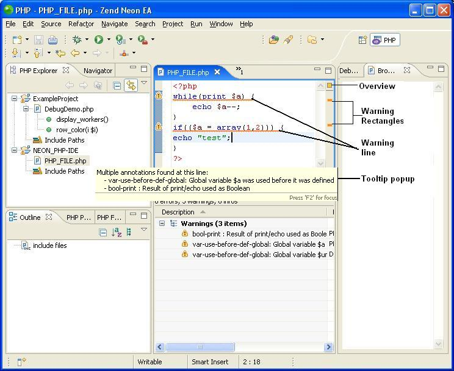
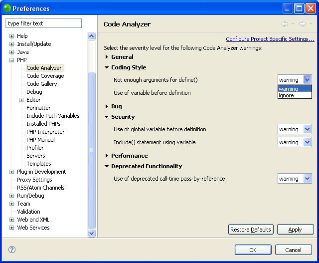
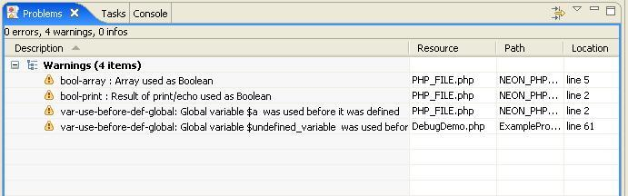

The Integrated Development Environment includes full PHP code-analysis abilities, error highlighting, hovering, tooltips and other visual aids (see Figure 1).
The code analyzer runs when the IDE is loaded and upon every save of modified code. It analyzes code, highlights errors and warnings detected, highlights the specific code segments that caused the problem and provides explanation and solution hints as hovered tooltips.

Figure 1 IDE: Error Highlighting
Note:
Errors:
Code causing an error is marked with yellow
underline.
Warnings: Code causing a warning is marked with red
underline.
Warning rectangles - are displayed
on the annotation bars.
Tooltip: Hover over warning rectangle
to display.
Explanation / example: Place cursor
into code, click F2 to display.
Click Windows | Preferences | PHP | Code Analyzer to open the Code Analyzer preferences dialog.

Figure 2 - Code Analyzer Preferences
Click on each category to open and display members. The category types are:
General
Coding Style
Bug
Security
Performance
Deprecated Functionality
Set the severity level (ignore or warning) for each member of each category.
Click Apply, then OK to exit. The Analyzer will issue warnings only for categories for which "ignore" has not been selected.
To disable a member of any category - change its severity level to "ignore". The Analyzer will no longer issue warnings for that member regardless of actual error severity.
The Problems Pane view is located at the bottom center (unless moved by user). It lists errors and warnings issued by the IDE and is synchronized with the Analyzer.
Note: The Problems Pane lists errors and warnings for all files in the Workspace. It lists the file name (Resource), the project name (Path) and the line number (Location) of the code causing the problem.
Generate warnings using the following code:
<? while(print $a) {
echo $a--;
}
if(($a = array(1,2))) {
echo "test";
} ?>

Figure 3 - Warnings
Double click on a warning listed in the Problems Pane. The file containing the code will open in the Editor pane at the code Location causing the error.
Note: No new warnings will be issued in the problem Pane, the Annotation or the Overview bars until you modify and save a code change.